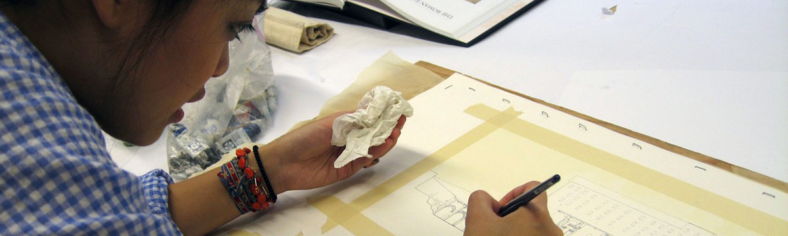

Our Team
Principal Investigator
Prof. Dr. Ing. Krupali Krusche, School of Architecture
Co-Investigators
Dott.ssa Alfonsina Russo, P.AR.Co. Archeologico del Colosseo
Dott.ssa Patrizia Fortini, P.AR.Co. Archeologico del Colosseo
Dr. Vitale Zanchettin, Musei Vaticani, Vatican
Prof. Giovanna Lenzi Sandusky, School of Architecture
Margaret Zhang, School of Architecture, MIT
Dhiraj Mehra, NDI Mumbai Global Gateway

Data Visualization project team:
Chaoli Wang, Associate Professor, Computer Science & Engineering 2019 - present
Siyuan Yao, PhD student, Computer Science & Engineering 2019 - 2022
Chase Brown, Research assistant 2019 - 2022
Chad Brown, Research assistant 2022 - present
Blake Caven, Research assistant 2022 - present
Past Collaborators:
The VisArray project team:
Christopher Sweet, Associate Director, Notre Dame Center for Research Computing
Kristina Davis, Visualization Scientist
James Sweet, PhD student
Cheng Liu, Research Programmer
DHARMA Collaborators over the years
Selena Anders, Assistant Professor, School of Architecture 2009-2014
Dr. Bhuvan Vikrama, Superintendent Archeologist, Archeological Survey of India (ASI)
Prof. Alan Defrees, School of Architecture
Bernie Stein, School of Architecture
Gigapan team:
Paul Turner, former Manager, Academic Technologies
Ben Keller, former student of Civil Engineering Department
Research Assistants
Elena Ezzo 2023
Sean Gaouette 2023
Michael Bursch 2021
Elizabeth Rose Hentges 2021
AJ Derouin 2013
Kristen Gates 2013 - 2014
Luke Golesh 2010-11
Selena Anders 2006-2009
Jill Kapadia 2006-2009
Iva Dokonal 2008
Danny Ajjain 2008
Student contributions
Cate Pharris
Jiayi (Echo) Yi
April Hu
Matthew Balkey 2011/12
Jackson Bangs 2011/12
Rachel Cink 2011/12
Gayan Hettipola 2011/12
Rogelio Huerta 2011/12
Rebecca Lischwe 2011/12
Claire Martell 2011/12
Shannon McGoldrick 2011/12
Andrew Petrovsky 2011/12
Mason Roberts 2011/12
Cecilia Simbana 2011/12
Katlyn Springstead 2011/12
Micaela Telleria 2011/12
Christine Tiffin 2011/12
Faith Tuttle 2011/12
Catherine Veasey 2011/12
Larissa Esmilla 2010
Elizabeth Fuller 2010
Kaitlyn Smous 2010
Lon Stousland 2010
Taj Mahal Project 2015Tom Nye
Nik Thorsrud
Margaret Zhang
Nicole Zielinkski
Nepal Project 2015
Matthew Schaefer
Martin Serrano
Roman Forum 2014-2015
Keaton Bloom
Joseph Cederoth
Stephanie Escobar
Taylor Stein